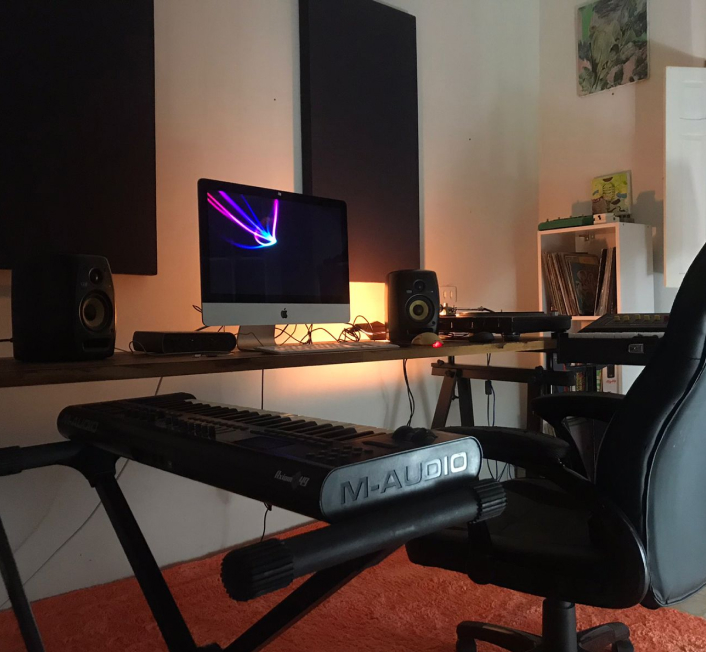

Saiba mais sobre nosso espaço e equipamentos

Microfones disponíveis
- Shure SM-57 (x4)
- Sennheiser 421 (x1)
- Senheiser e835 (x2)
- Senheiser E604 (x2)
- AKG D-112 (x1)
- Neumann KM184 (x2)
Interfaces de Gravação
- AVID Mbox Pro 3 - 2 canais
DAWs
- Ableton Live 9
- Ableton Live 11
- Pro Tools 9
- Garage Band
Plugins
- Waves Complete
- Slate Audio
- Native Instruments
- SoftAudio Plugins
Monitores de Áudio
- KRK VXT-4 (x2)
Fones de Ouvido
- Sennheiser HD206 (x2)
Computador
- iMac (Retina 21.5 2017 i5 Quad-Core 8GB RAM)
Sintetizadores
- Solaris ESTRADIN 320 (Russo)
Controladoras
- Controladora MIDI M-Audio Axiom49
- Controladora AKAI APC 40
- Controladora MASCHINE Mk2
Guitarras
- ALAMO TITAN II
- FORMANTA SOLO (Russa)
- URAL 650 (Russa)
Amplificadores
- Fender Deluxe
- Marshal DSL40
- Mini-Fender
- Pré Amplificador valvulado AMPEX 601 (No momento, passando por restauro e manutenção)
Toca-discos
- TECHNICS MK2 (x2)
- Mixer Pioneer DJM-400
Instrumentos
- Violão Irmão Carvalho TS8
- Cavaquinho Carlinhos Luthier n4E
- Escaleta Hohner 37
Pedais de Efeitos
- Line 6 - DL4
- PulseMonger by SynthMonger
- Proco RAT
- MXR - Phaser90
- Electro Harmonix - V256
- Crybaby WahWah
- BOSS - Chromatic Tuner